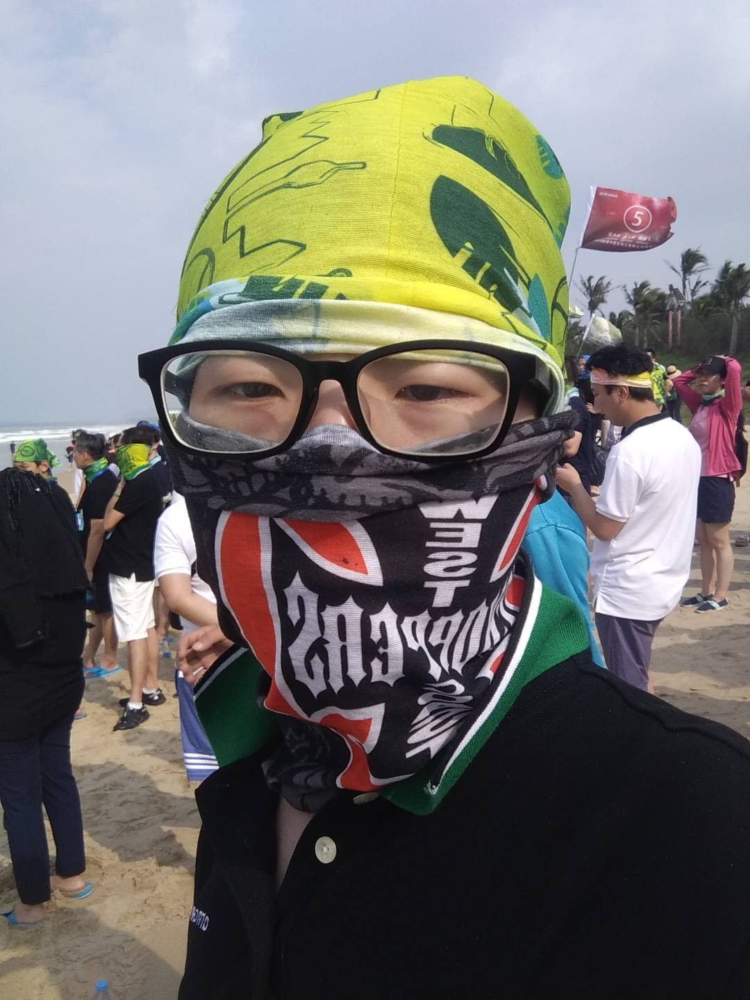
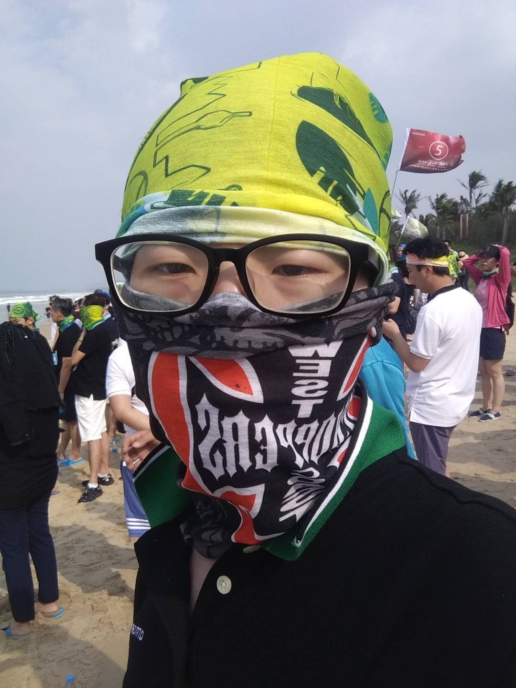

Eric
Eric
 Liu

Liu

email: eric.c.liu AT arm.com
Topics
- Program language, Compiler and runtime systems: SIMD in Java, Hotspot
- Computer architectures: AArch64.
Short Bio
5 years' experience in compiler. Member of OpenJDK project.
Working Experience
- Senior Software Engineer, ARM Ltd, 2019 - Present
- Software Engineer, PayEgis(startup), 2017 - 2019
theRealELiu
Last modified: Oct 17, 2022